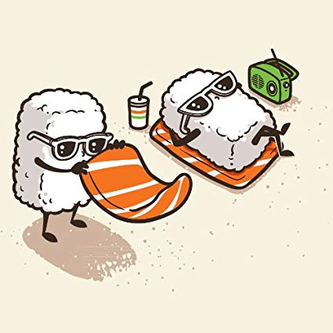

Bachelor / Graduation Date : 2019/05
Psychology GPA : 3.5
After experiencing the Great East Japan Earthquake as a high schooler in Fukushima, I decided to obtain my university degree abroad. I decide to major in Psychology to learn about human relationships. My interest in this subject was sparked from my experience being bullied in junior high school.
During my years studying in Iowa, I Played bass guitar in the college jazz band, where on top of playing, I helped organize a variety of events, including a successful concert at the Mall of America.
I also worked part-time for a Cafe called Sodexo.
Exchange Program / 01/2018 ~ 05/2018
Philosophy
I had the opportunity to study abroad in Sicily, Italy for a semester as part of an exchange program between Sicily International Education Center and Morningside College.
I gained basic communication skills in Italian.
Work / Internship Experience (1 yr. or more and less than 2 yrs.)
Tokyo Academics is Japan’s leading international academic preparation center. Located in Nishiazabu, Tokyo Academics is an organization of over 50 professionals, graduate students, and staff, who passionately believe in supporting students in achieving their full potential. Tokyo Academics provides standardized test support, academic subject tutoring, technology education, admissions counseling, and research support for students in elementary, middle, and high school. Learn more at www.TokyoAcademics.com.
2018/06 - 2018/08 (Full Time)
Content Creator
( Job Category : Writer/Reporter Career Level : Intern )
User-focused development/retention of a professional web development agency to make it easy for younger Japanese individuals to read and use An explanation, written in Japanese from the ground-up, of how the American university admissions process works, how it differs for Japanese individuals, and how to bridge those gaps.
100% completely free, along with tools and other resources that can be downloaded and that guides students through certain pain points in the process (e.g., explaining to parents and other stakeholders, guides on how to write a letter of recommendation, filling out financial aid forms).
Potential partnerships with translation firms to offer discounted rates for translation of critical documents.
Original content through multiple media channels (e.g., videos, blog entries) that educate Japanese students and stakeholders on the admissions process for American schools.
Running the hotels in Japan, Vietnam, and Taiwan.
2017/06 - 2017/07 (Full Time)
Marketing
( Job Category : Marketing/Research Career Level : Intern )
Making the presentation for Thai.
Marketing research.
| Favorite Movie | |
|---|---|
| Toy Story | |
| My Heros | |
| Victor Wooten & Marcus Miller | |
| Food | |
|  | Sushi |